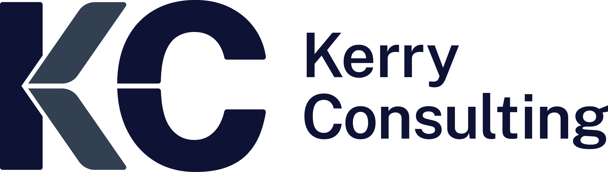

Job Search Service for a German Startup
Elinext built a modern job portal with rich functionality for a product owner preparing launch in Germany.
Read case study
Proposal brief by ElinextYour public jobs, salary guides, and consultant pages already carry strong trust. The next step is a cleaner digital path from role discovery to candidate action.
Why we're here: we saw the recent cyber, APAC technology strategy, and S/4HANA healthcare mandates. Those roles need a web flow that feels fast, secure, and easy.
Engagement model
A dedicated squad works under Kerry's product or marketing owner, with weekly demos and a six-week pilot.
Relevant stack
Keep content control, while improving speed, forms, and release checks.
Map the candidate journeyAudit the positions, consultant, salary guide, and login paths. Mark where senior technology candidates pause or leave.
Clean up key templatesRebuild core job and guide pages as stable components, while keeping WordPress control for consultants and marketing.
Protect candidate dataHarden validation, consent, and release checks around login, CV upload, contact forms, and consultant routing.
Give consultants useful signalsAdd simple views for role intake, funnel health, and salary-guide leads, so teams see action fast.
Elinext built a modern job portal with rich functionality for a product owner preparing launch in Germany.
Read case studyElinext created an applicant tracker with candidate, vacancy, and admin modules to streamline hiring work.
Read case study